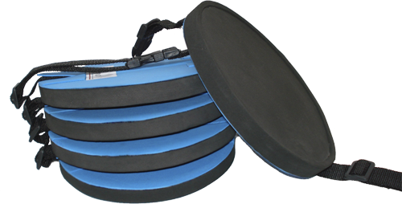
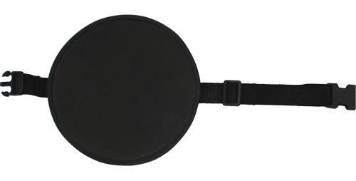
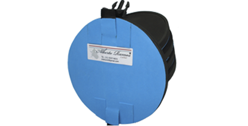
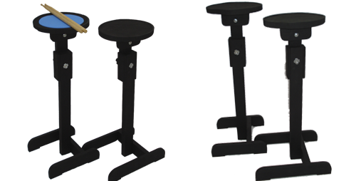

Sobre
Álbum
Produtos
Contato
Modelo Pad de Rudimentos

O Pad Rudimentos foi exclusivamente desenvolvido para o aquecimento e os exercios de rudimentos.

Possui cinto de fixação ajustável para que se possa deixar o pad estável e confortavel sobre a perna.

Os simuladores produzidos em cedro recebem uma camada de borracha siliconizada de 6mm a 10mm que são perfeitas para o estudo silencioso dos rudimentos mantendo rebote idêntico aos das peles.

Configuração:
Pad de rudimentos com estante ajustavel em 3 alturas.
Pad de rudimentos com cinto de fixação.